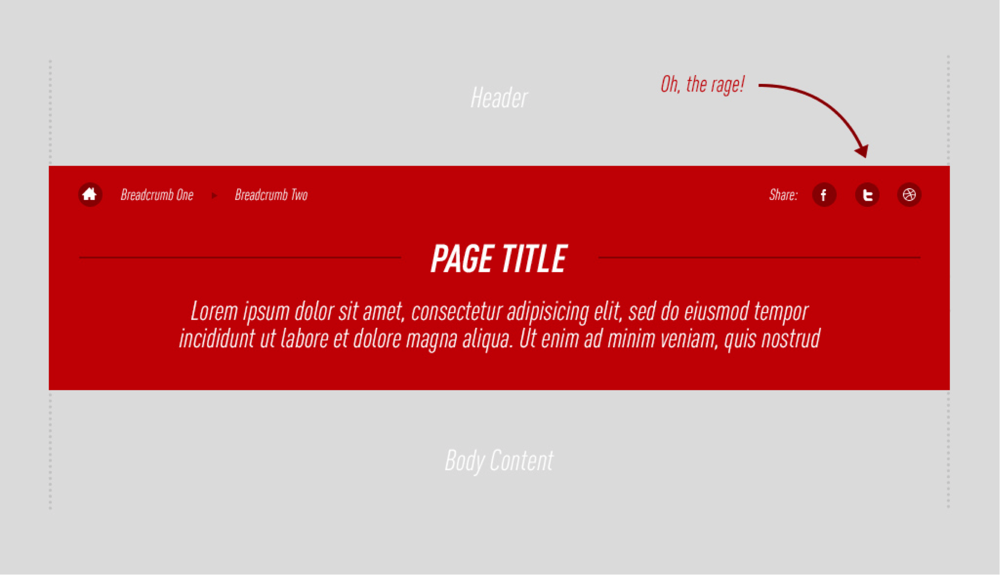
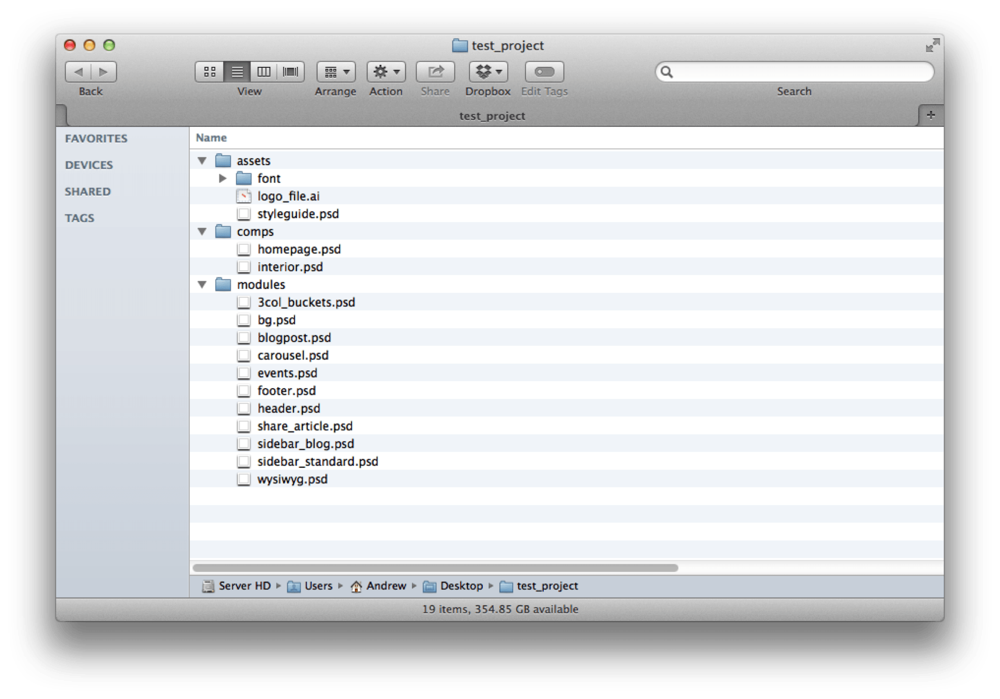
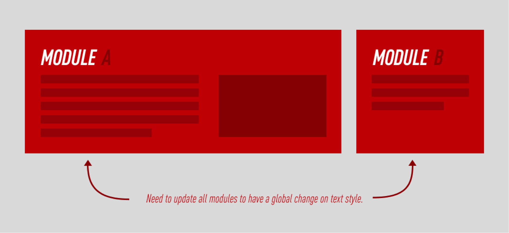
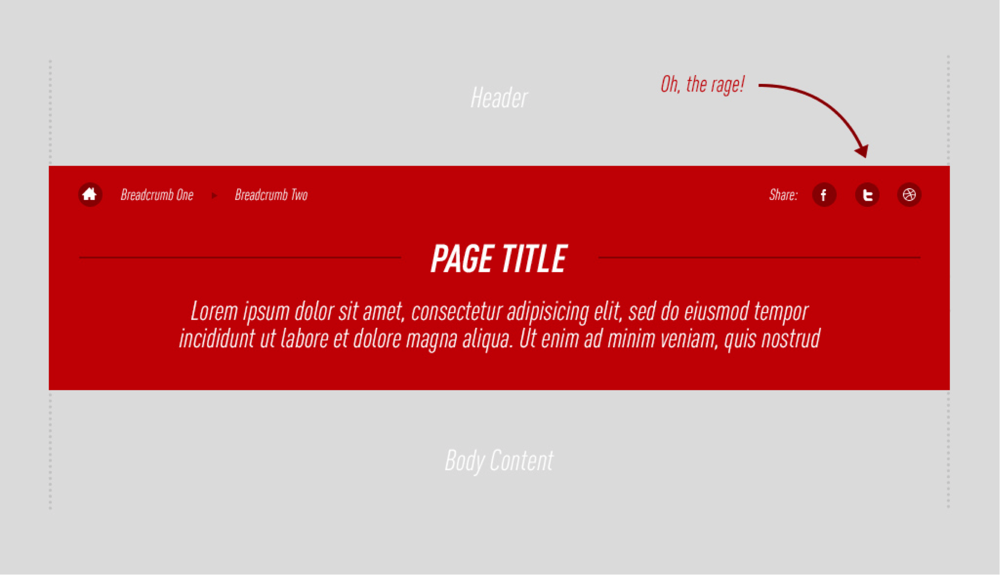
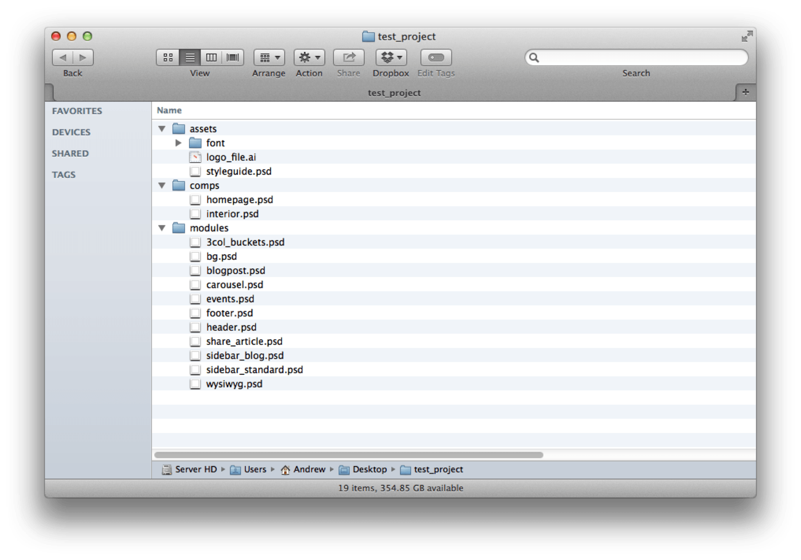
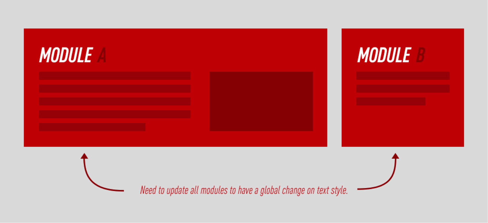

-
Using Photoshop Like A Ninja: Modular PSDs
A potential solution to documentation hell.
Orginally posted at O3 World's blog.

Using Photoshop Like A Ninja: Modular PSDs
Taking a different approach to working with PSDs.
Today I will attempt to address one of the Photoshop Designer’s worst nightmares. Here at O3 World, we don’t have dedicated production designers. If I take on the design of a site, I am with it to the bitter end. I vividly remember one project, back when Twitter updated its logo, where I had to go through 15+ Photoshop Documents (PSDs) per viewport and copy in a new Twitter logo to the area where a user could share the page because... “Documentation, padawan”. Talk about a special kind of hell.

Now you may be thinking, “Andrew, why didn’t you just remove the ‘share article’ icons? Nobody uses them anyway." You would have saved me a headache, but then I wouldn’t have this awesome perspective on Photoshop.
It was the end of the day and I had over 60 PSDs to adjust. This was in 2012 and Photoshop was just a wee bit late in adding something useful to solve this problem.
Welcome to the world of Linked Smart Objects.
(Linked Smart Objects were release in an update to Photoshop CC (14.2.1).)
Project Setup
Now, these aren’t the dumb Smart Objects of days past. These are auto-updating objects of magic. I realize that you could achieve a similar effect with the old Smart Objects, but managing and updating them, I considered to be a hassle.
When I jump into UI design, I do all the normal setup like creating a color swatches palette, grid, type styles, etc. Once that is all done, I have started to set up my projects in smaller features (modules) that combine together to create a page (comps). A ‘module’ is something like “header.psd”, “blogpost.psd”, “carousel.psd” “wysiwyg.psd” or any other feature block that you may come across in a website (like any grouping of social icons.. per our example above). A comp is a collection of these modules that make up a page.
Take a look at this example file structure.

Once we have this set up, we can keep all our designing within the modules and let the comps auto-update as we make changes. For example, if you changed the color and text size of the “blogpost.psd”, the changes would cascade throughout all comps where it appeared.
The Pros and Cons: Do you. Take What's Useful.
Unless Batman has tricked you again, there are definitely two sides to every coin.
This process isn’t perfect for everything, specifically, it sucks for adding in real content to your designs.
First, if you don’t design by rough character counts, but instead by the actual content for each comp, you can see how this system would fall apart rather quickly. With the shift in designing around actual content, this could be a deal breaker.
Typography
Another minor inconvenience is that you still cannot make some global changes. For example, adjusting the color of body copy throughout all modules and comps. To do something like this, you would need to have a document behind the modules auto-updating them and having it cascade into the comps, which in certain instances would defeat the whole purpose of doing this. Whether modular or not, if you are changing the text color on body copy there are a lot of layers to update throughout your page comps.

Margins
Margins are still a slight problem. You can adjust margins within modules and have those changes cascade, but you will still have to manually adjust your margins in the comps where two modules meet. You would be doing this, modular or not, if you had to make margin adjustments.

All in All
So far this system has helped me connect to the mindset of my developers a little bit better, by designing self-contained features. While it is not perfect for all situations, I feel that in certain areas, it is a good safety net for needlessly spending hours updating frustrating elements of design docs. At this point, the jury is still out on how deeply integrated Linked Smart Objects will be in my workflow. It is a fun experiment for the time being, and I hope to learn where they fit in, by trial and error.
I am continually trying to find a better way to use my tools and if anyone out there has suggestions, or wants to discuss their project workflow, hit me up on Twitter.
Like this post?
Consider following me on Twitter or Dribbble.
Today I will attempt to address one of the Photoshop Designer’s worst nightmares. Here at O3 World, we don’t have dedicated production designers. If I take on the design of a site, I am with it to the bitter end. I vividly remember one project, back when Twitter updated its logo, where I had to go through 15+ Photoshop Documents (PSDs) per viewport and copy in a new Twitter logo to the area where a user could share the page because... “Documentation, padawan”. Talk about a special kind of hell.
Now you may be thinking, “Andrew, why didn’t you just remove the ‘share article’ icons? Nobody uses them anyway." You would have saved me a headache, but then I wouldn’t have this awesome perspective on Photoshop.
It was the end of the day and I had over 60 PSDs to adjust. This was in 2012 and Photoshop was just a wee bit late in adding something useful to solve this problem.
Welcome to the world of Linked Smart Objects.
(Linked Smart Objects were release in an update to Photoshop CC (14.2.1).)
Project Setup
Now, these aren’t the dumb Smart Objects of days past. These are auto-updating objects of magic. I realize that you could achieve a similar effect with the old Smart Objects, but managing and updating them, I considered to be a hassle.
When I jump into UI design, I do all the normal setup like creating a color swatches palette, grid, type styles, etc. Once that is all done, I have started to set up my projects in smaller features (modules) that combine together to create a page (comps). A ‘module’ is something like “header.psd”, “blogpost.psd”, “carousel.psd” “wysiwyg.psd” or any other feature block that you may come across in a website (like any grouping of social icons.. per our example above). A comp is a collection of these modules that make up a page.
Take a look at this example file structure.
Once we have this set up, we can keep all our designing within the modules and let the comps auto-update as we make changes. For example, if you changed the color and text size of the “blogpost.psd”, the changes would cascade throughout all comps where it appeared.
The Pros and Cons: Do you. Take What's Useful.
Unless Batman has tricked you again, there are definitely two sides to every coin.
{kind=link}
This process isn’t perfect for everything, specifically, it sucks for adding in real content to your designs.
First, if you don’t design by rough character counts, but instead by the actual content for each comp, you can see how this system would fall apart rather quickly. With the shift in designing around actual content, this could be a deal breaker.
Typography
Another minor inconvenience is that you still cannot make some global changes. For example, adjusting the color of body copy throughout all modules and comps. To do something like this, you would need to have a document behind the modules auto-updating them and having it cascade into the comps, which in certain instances would defeat the whole purpose of doing this. Whether modular or not, if you are changing the text color on body copy there are a lot of layers to update throughout your page comps.
Margins
Margins are still a slight problem. You can adjust margins within modules and have those changes cascade, but you will still have to manually adjust your margins in the comps where two modules meet. You would be doing this, modular or not, if you had to make margin adjustments.
All in All
So far this system has helped me connect to the mindset of my developers a little bit better, by designing self-contained features. While it is not perfect for all situations, I feel that in certain areas, it is a good safety net for needlessly spending hours updating frustrating elements of design docs. At this point, the jury is still out on how deeply integrated Linked Smart Objects will be in my workflow. It is a fun experiment for the time being, and I hope to learn where they fit in, by trial and error.
I am continually trying to find a better way to use my tools and if anyone out there has suggestions, or wants to discuss their project workflow, hit me up on Twitter.
Consider following me on Twitter or Dribbble.